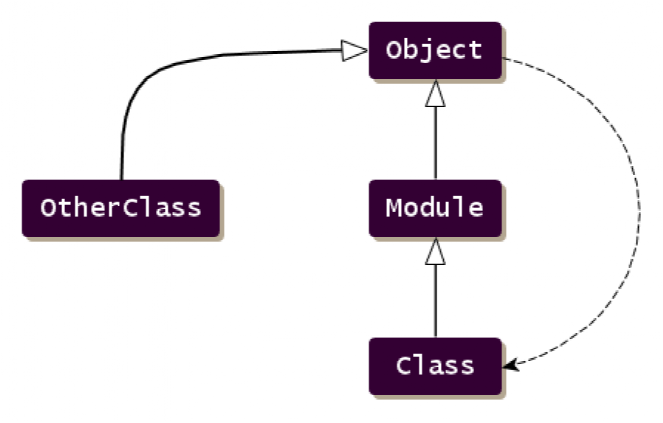
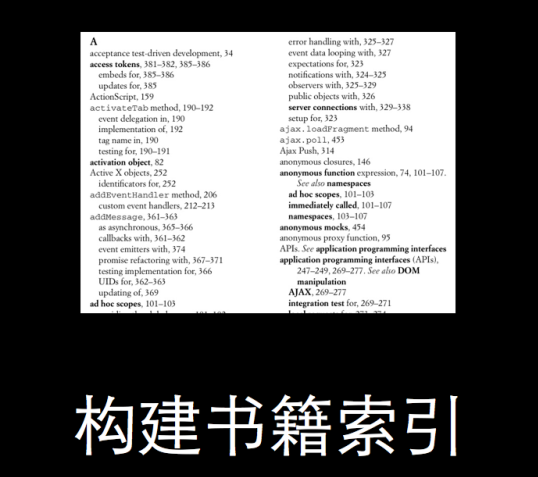
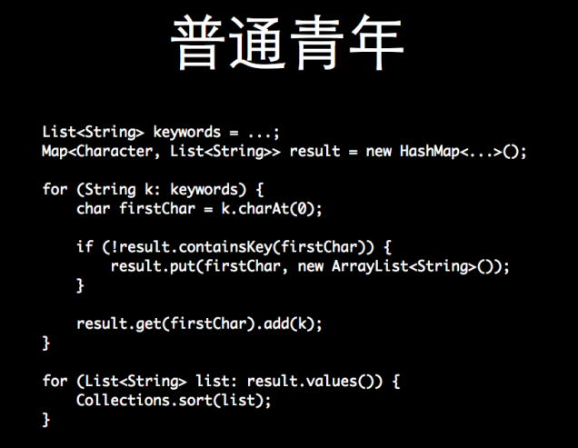
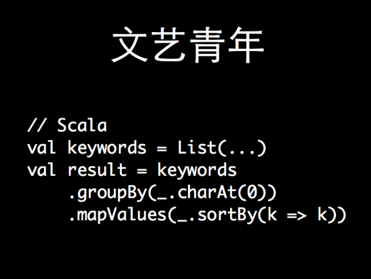
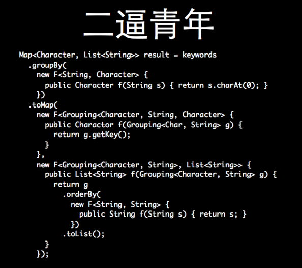
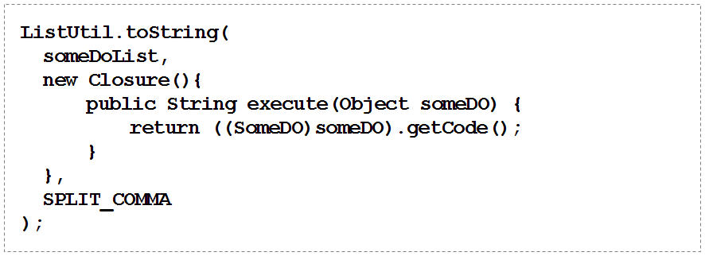
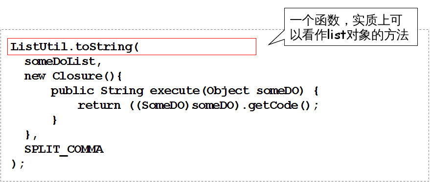
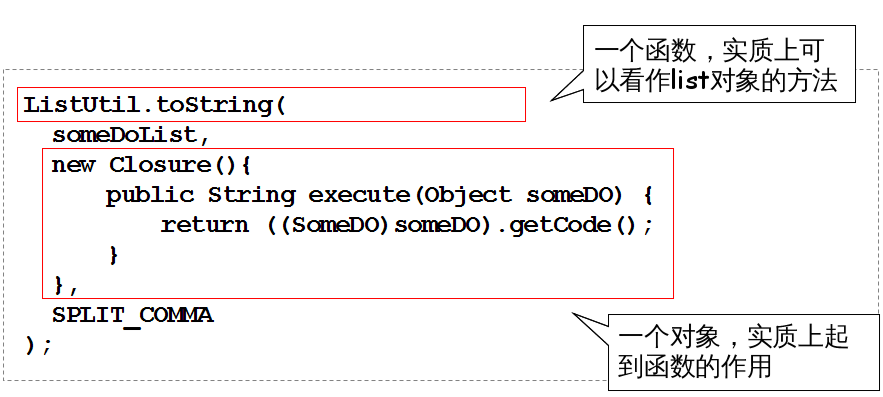

<!DOCTYPE html>
<!--[if lt IE 7]> <html class="no-js ie6" lang="en"> <![endif]-->
<!--[if IE 7]>    <html class="no-js ie7" lang="en"> <![endif]-->
<!--[if IE 8]>    <html class="no-js ie8" lang="en"> <![endif]-->
<!--[if gt IE 8]><!-->  <html class="no-js" lang="en"> <!--<![endif]-->
<head>
	<meta charset="utf-8">
	<meta http-equiv="X-UA-Compatible" content="IE=edge,chrome=1">
	
	<title>magic ruby</title>
	
	<meta name="author" content="lifu@taobao.com">
	<meta name="viewport" content="width=1024, user-scalable=no">
	
	<!-- Custom CSS just for this page -->
	<link rel="stylesheet" href="../main.css">

	<!-- Core and extension CSS files -->
	<link rel="stylesheet" href="../core/deck.core.css">
	<link rel="stylesheet" href="../extensions/goto/deck.goto.css">
	<link rel="stylesheet" href="../extensions/menu/deck.menu.css">
	<link rel="stylesheet" href="../extensions/navigation/deck.navigation.css">
	<link rel="stylesheet" href="../extensions/status/deck.status.css">
	<link rel="stylesheet" href="../extensions/hash/deck.hash.css">
	
	<!-- Theme CSS files (menu swaps these out) -->
	<link rel="stylesheet" id="style-theme-link" href="../themes/style/web-2.0.css">
	<link rel="stylesheet" id="transition-theme-link" href="../themes/transition/horizontal-slide.css">
	
	<script src="../modernizr.custom.js"></script>
</head>

<body class="deck-container">

  <section class="slide">
	  <h1>ruby介绍</h1>
	  <h4 style="position:absolute;top:65%;right:20%">——李福@淘宝</h4>
	  <h4 style="position:absolute;top:70%;right:20%">fswordlee@twitter</h4>
	  <h4 style="position:absolute;top:75%;right:20%">http://weibo.com/fsword</h4>
  </section>


<!--  <section class="slide" id="agenda">-->
<!--	  <h2>写在前面</h2>-->
<!--	  <pre class="slide"><strong>这不是一篇语言入门介绍</strong></pre>-->
<!--	  <pre class="slide">这份slide是为那些知道一点ruby语言，看过几行ruby代码的同学准备的</pre>-->
<!--  </section>-->

  <section class="slide" id="agenda">
	  <h2>介绍 Ruby</h2>
	  <ul>
	    <li><a href="#oo">面向对象的设计</a></li>
	    <li><a href="#open_class">开放类</a></li>
	    <li><a href="#module">理解模块</a></li>
	    <li><a href="#program_style">block与声明式编程</a></li>
	    <li><a href="#design_pattern">Ruby与设计模式</a></li>
	  </ul>
  </section>

  <section class="slide" id="oo">
	  <h1>面向对象的设计</h1>
	</section>

  <section class="slide">
	  <h2>java中的对象</h2>
    <div class="slide">	  
	    <pre>基本数据类型: int, float, boolean ...</pre>
    </div>
    <div class="slide">	  
	    <pre>java代码中的Object表示什么？</pre>
    </div>
    <div class="slide">	  
	    <strong>一个类？</strong>
    </div>
    <div class="slide">	  
	    <pre>那么 Object.class 又是什么呢？</pre>
    </div>
    <div class="slide">	  
	    <strong>
        另一个类？
      </strong>
    </div>
    <div class="slide" style="text-align:center"><h3><em>似乎不太一致？</em></h3></div>
  </section>
  
  <section class="slide">
	  <h2>java中的对象</h2>
    <div class="slide">	  
      <h4>这段代码是否能统一处理各种对象？</h4>
	    <pre>
public void dealWith( Object... objs ){
    System.out.println(objs.length);
}</pre>
    </div>
    <div class="slide">	  
	    <pre>
<strong>dealWith( 1 )
dealWith( new int[]{ 1,2 })
dealWith( new Integer[]{ 1,2 })</strong></pre>
    </div>
  </section>
  
  <section class="slide">
	  <h2>Ruby: 一切都是对象</h2>
    <div class="slide">	  
	    <pre>
ruby-1.9.2-p290 :001 > iter = 5.times
 => <strong>#&lt;Enumerator: 5:times&gt;</strong> </pre>
	  </div>
    <div class="slide">
      <pre>
ruby-1.9.2-p290 :002 > iter.next
 => <strong>0</strong></pre>
	  </div>
    <div class="slide">
      <pre>
ruby-1.9.2-p290 :003 > iter.next
 => <strong>1</strong></pre>
	  </div>
  </section>
  
  <section class="slide">
	  <h2>Ruby: 一切都是对象</h2>
    <div class="slide">	  
	    <pre>
"string".class  # <strong> String </strong>
"string".class.class  # <strong> Class </strong>
"string".class.superclass  # <strong> Object </strong>
"string".class.is_a? Module  # <strong> true </strong>
"string".class.is_a? Object  # <strong> true </strong>
1.class  # <strong> Fixnum </strong>
1.class.class  # <strong> Class </strong>
1.class.superclass  # <strong> Integer </strong>
1.class.superclass.superclass   # <strong> Numeric </strong>
1.class.superclass.superclass.superclass  # <strong> Object </strong>
nil.class  # <strong> NilClass </strong>
nil.class.class  # <strong> Class </strong>
nil.class.superclass  # <strong> Object </strong>
Class.superclass  # <strong> Module </strong>
Class.superclass.superclass  # <strong> Object </strong>
Object.superclass  # <strong> BasicObject </strong>
Object.superclass.superclass  # <strong> nil </strong></pre>
    </div>
  </section>

  <section class="slide">
	  <h2>Ruby: 一切都是对象</h2>
	  <pre>统一的对象模型</pre>
	  
  </section>

  <section class="slide">
	  <h2>Ruby: 一切都是对象</h2>
	  <pre>讨论一下<strong>多态</strong></pre>
	  <pre>ruby支持override，但是不支持overload
...</pre>
  </section>

  <section class="slide" id="open_class">
	  <h1>开放类(open class)</h1>
	</section>

  <section class="slide">
	  <h2>开放类</h2>
	  <div class="slide">
	    <h3>需求：list.join(",")</h3>
	  </div>
	  <div class="slide">
	    <h4>java的做法（示意）</h4>
	    <pre>class ExtList implements List{ 
    ExtList(List innerList){...}
    public String join(String seperate){...}
}
<strong>//现有代码全部需要重写，而且会导致ExtList有不同版本</strong></pre>
	  </div>
	  <div class="slide">
	    <h4>open class的方式</h4>
<pre>class List
  def join ... end
end</pre>
    </div>
  </section>

  <section class="slide">
	  <h2>开放类</h2>
	  <div class="slide"><h3>需求：time.yesterday</h3> </div>
	  <div class="slide"><pre><strong>class Time
  def yesterday
    self - 86400
  end
end</strong></pre></div>
	  <div class="slide"><h4>需求：{:name => 'john', :age => 31}.only :name</h4> </div>
	  <div class="slide"><pre><strong>class Hash
  def only(*allowed)
    reject { |k,v| !allowed.include?(k) }
  end
end</strong></pre></div>
  </section>

  <section class="slide" id="module">
	  <h1>理解模块(module)</h1>
	</section>

  <section class="slide">
    <h2>模块的用途</h2>
    <strong>命名空间</strong>
    <pre>module A
  class People
    def say
      puts "hello"
    end
  end

  class Animal
    def say
      puts "mie...."
    end
  end
end

p = A::People.new
p.say # <strong>hello</strong>
</pre>
  </section>

<section class="slide">
  <h2>模块的用途</h2>
  <strong>多重继承</strong>
  <pre>module A
  module People
    def say
      puts "hello"
    end
  end
  module Easter
    def eat
      puts 'eat'
    end
  end
end

class Chinese
  include A::People
  include A::Easter
end

p = Chinese.new
p.say # hello
p.eat # eat</pre>
  </section>

  <section class="slide" id="program_style">
    <h1>block与声明式编程</h1>
  </section>

  <section class="slide">
	  <h2>ruby中的循环</h2>
	  <div class="slide">
	    <strong>原始形式(外部迭代器)</strong>
	    <pre>
iter = 2.upto(5)
while iter.next
  p 'hello'
end</pre>
    </div>
	  <div class="slide">
	    <strong>改为block(内部迭代器)</strong>
	    <pre>
2.upto(5) do
  p 'hello'
end</pre>
    </div>
	  <div class="slide">
	    <strong>支持参数</strong>
	    <pre>
2.upto(5) do <strong>|i|</strong>
  p 'hello'<strong>+i</strong>
end</pre>
    </div>
  </section>

  <section class="slide">
	  <h2>block的作用</h2>
	  <div class="slide">
	    <strong>先看一个群里的问题(groovy)</strong>
	    <pre>
for(int i =0 ;i&lt;10;i++){
  pool.submit({
    println i
  } as Runnable);
}</pre>
	  </div>
	  <pre class="slide">结果：
1
2
4
4
5
6
8
8
</pre>
    <pre class="slide"><strong>变量变化，不能按照预期工作</strong></pre>
  </section>

  <section class="slide">
	  <h2>block的作用</h2>
	  <div class="slide">
	    <strong>我们看看java是怎么做的</strong>
	  </div>
    <pre class="slide">
for(int i = 0 ; i&lt;10 ; i++){
  <strong>final</strong> int <strong>tempI</strong> = i;
  pool.submit(new Callable(){
    public Object call(){
      System.out.println(<strong>tempI</strong>); return null;
    }
  });
}</pre>
    <pre class="slide"><strong>可以工作，但是增加了临时变量，不自然</strong></pre>
  </section>

  <section class="slide">
	  <h2>block的作用</h2>
	  <div class="slide">
	    <strong>改进groovy的例子</strong>
      <pre>(0..10).each{
  i -&gt; pool.submit( { println i } as Runnable );
}</pre>
    </div>
	  <div class="slide">
	    <strong>ruby的例子</strong>
      <pre>(0..10).each{
  |i| pool.submit { print i };
}</pre>
    </div>
	  <div class="slide">
	    <strong>也可以写成</strong>
      <pre>(0..10).each <strong>do</strong>
  |i| pool.submit { print i };
<strong>end</strong></pre>
    </div>
    <pre class="slide"><strong>总结：block使得变量局部化</strong></pre>
  </section>

  <section class="slide">
	  <h2>block的作用：编程模式</h2>
	  <div class="slide">
	    <strong>指令式编程</strong>
      <pre>List<String> keywords  =  getSomeData();
Map<Character,  List<String>> result = new HashMap<...>();
for (String  k:  keywords)  {
    char  firstChar = k.charAt(0);
    if  (!result.containsKey(firstChar))  {
        result.put(firstChar, new ArrayList<String>());	
    }
    result.get(firstChar).add(k);
}
for  (List<String>  list:  result.values())  {
     Collections.sort(list);
}
</pre>
    </div>
	  <div class="slide">
	    <strong>声明式编程</strong>
      <pre>result = keywords.group_by{ |a| a[0..1] }</pre>
    </div>
  </section>

  <section class="slide">
	  <h2>娱乐时间: 闭包与青年</h2>
	  
	</section>

  <section class="slide">
	  <h2>娱乐时间: 闭包与青年</h2>
	  
	</section>

  <section class="slide">
	  <h2>娱乐时间: 闭包与青年</h2>
	  
	</section>

  <section class="slide">
	  <h2>娱乐时间: 闭包与青年</h2>
	  
	</section>

  <section class="slide">
	  <h2>再看函数与对象</h2>
	  <pre class="slide"><strong>从项目里找一段代码</strong></pre>
	  
	</section>

  <section class="slide">
	  <h2>再看函数与对象</h2>
	  
	</section>

  <section class="slide">
	  <h2>再看函数与对象</h2>
	  
	  <pre class="slide"><strong>怎么写更好？</strong></pre>
	</section>

  <section class="slide" id="design_pattern">
    <h1>语言与设计模式</h1>
  </section>
  
  <section class="slide">
	  <h2>语言与设计模式</h2>
	  <ul>
	    <li>
	      <h3>先来看一个method missing的例子</h3>
	    </li>
	  </ul>
	  <pre class="slide">
class MyFoo
    def method_missing(method, *args, &block)
        puts %Q[method: #{method}
args: #{args.inspect}
on: #{self.inspect}
]
    end
end</pre>
	  <pre class="slide">
<em>ruby-1.9.2-p290 :009 &gt;</em> foo = MyFoo.new
<em>ruby-1.9.2-p290 :010 &gt;</em> foo.hello
<strong>method: hello
args: []
on: #&lt;MyFoo:0x0000000144cbf8&gt;</strong>
<em>ruby-1.9.2-p290 :011 &gt;</em> foo.world
<strong>method: world
args: []
on: #&lt;MyFoo:0x0000000144cbf8&gt;</strong></pre>
	</section>

  <section class="slide">
	  <h2>语言与设计模式</h2>
	  <pre class="slide"><strong>它能做什么？</strong></pre>
	  <pre class="slide"><em>ruby版代理模式</em></pre>
	  <pre class="slide">
class MyProxy
    def initialize(real_account)
        @subject = real_account
    end

    def method_missing(name, *args)
        puts("Delegating #{name} message to subject.")
        @subject.send(name, *args)
    end
end</pre>
	</section>


  <section class="slide" id="q_a">
	  <h2>参考</h2>
	  <ul>
	    <li><h3>徒维写的<a href="http://saito.im/slide/ruby-new.html">ruby语法简介</a></h3></li>
	    <li><h3><a href="http://ihower.tw/rails3/">http://ihower.tw/rails3</a></h3></li>
	    <li><h3><a href="http://ruby-china.org">ruby-china.org</a></h3></li>
	    <li><h3><a href="http://railscasts.com">railscasts.com</a></h3></li>
	    <li><h3>《Design Pattern in Ruby》</h3></li>
	    <li>
	      <h3>旺旺</h3>
	      <ul>
	        <li>快乐的程序员 ( 338111205 )</li>
	        <li>Scriptable动态语言兴趣组( 26482048 )</li>
	      </ul>
	    </li>
	  </ul>
	  <h3 class="slide"><strong>亲，要学会翻墙哦 :-)</strong></h3>
  </section>

  <section class="slide" id="q_a">
	  <h1>Q & A</h1>
  </section>


<a href="#" class="deck-prev-link" title="前一页">&#8592;</a>
<a href="#" class="deck-next-link" title="下一页">&#8594;</a>

<p class="deck-status">
	<span class="deck-status-current"></span>
	/
	<span class="deck-status-total"></span>
</p>


<a href="." title="Permalink to this slide" class="deck-permalink">#</a>


<script src="../jquery-1.7.min.js"></script>

<!-- Deck Core and extensions -->
<script src="../core/deck.core.js"></script>
<script src="../extensions/hash/deck.hash.js"></script>
<script src="../extensions/menu/deck.menu.js"></script>
<script src="../extensions/goto/deck.goto.js"></script>
<script src="../extensions/status/deck.status.js"></script>
<script src="../extensions/navigation/deck.navigation.js"></script>

<!-- Specific to this page -->
<script type="text/javascript">
	$.deck('.slide');
</script>

</body>
</html>
